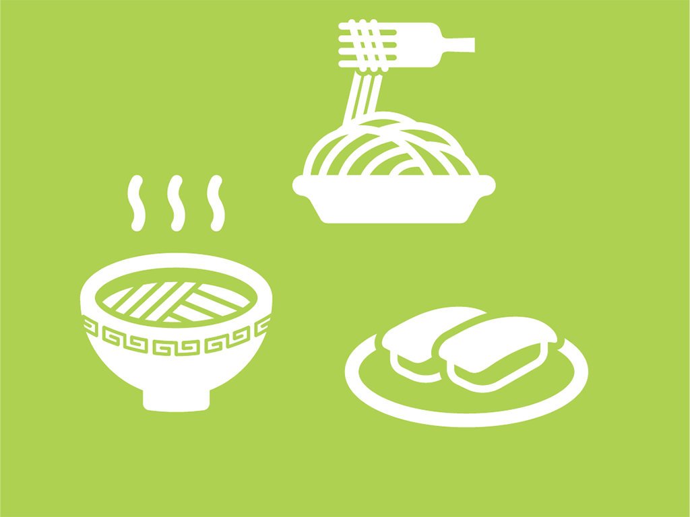

セレクトコース
和洋中の料理を学ぶことができます。
料理のレパートリーを増やしたい方におすすめのコースです。
- 全12回 ¥96,000-
- 基礎編（第1,2回） ¥4,000-
- 応用編（第3回〜） ¥8,800-
基礎編では、食卓の定番メニューをイチから学ぶことができます。定番料理をマスターしたい方にはぜひ受講をオススメします。
また、応用編からはアレンジレシピで普段と一味違う料理を学んでいきます。時短メニューからおもてなしメニューまで幅広いメニューをマスターできます。
基礎編のみの受講も可能です。その他ご不明点がございましたら、お気軽にお問い合わせください。
開催予定
| 日程 | 昼の部 / 夜の部 | 内容 |
|---|---|---|
| 5/8 | 11:30-13:00 / 19:00-20:30 | 入門編① 食材の栄養バランスと彩り |
| 5/22 | 11:30-13:00 / 19:00-20:30 | 入門編② 食材の切り方 |
| 6/5 | 11:30-13:00 / 19:00-20:30 | 基礎編① １つずつ包んで仕上げるオムライス |
| 6/19 | 11:30-13:00 / 19:00-20:30 | 基礎編② ふっくらジューシーハンバーグ |
| 7/2 | 11:30-13:00 / 19:00-20:30 | 基礎編③ 外はカリっと中はジューシーな唐揚げ |
| 7/16 | 11:30-13:00 / 19:00-20:30 | 基礎編④ ご飯がすすむ鯖の味噌煮 |
| 7/30 | 11:30-13:00 / 19:00-20:30 | 基礎編⑤ 柔らか豚のしょうが焼き |
| 8/20 | 11:30-13:00 / 19:00-20:30 | 基礎編⑥ 一番ダシで作るふわとろ親子丼 |
| 8/27 | 11:30-13:00 / 19:00-20:30 | 基礎編⑦ 手作りホワイトソースのグラタン |
| 9/13 | 11:30-13:00 / 19:00-20:30 | 基礎編⑧ ボリューム満点酢豚と春巻き |
鍋戸 料子
（なべと りょうこ）
料理研究家、主婦歴10年
料理未経験の方でも楽しく参加していただけるように工夫しています。
ぜひ、気軽に参加していただければ嬉しいです。